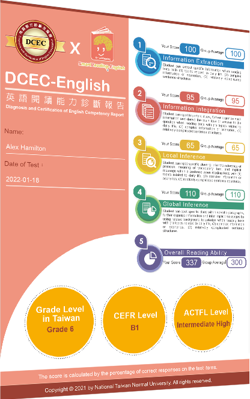

關於DCEC
英語能力診斷測驗
Diagnosis and Certification of English Competency
英語能力診斷測驗是檢測英語學習者學習成效的線上診斷系統。本測驗提出「能力認證與學習診斷雙軌並行」，測驗結果反映學習者英語溝通的熟練程度，除了可做為英語能力認證，更強調學習診斷的功能，提供縱向與橫向雙方面診斷訊息，在縱向診斷上可同時掌握學習者整體表現及相對應的等級水準，在橫向診斷上則詳盡檢視各項能力指標，具體描述現階段的能力表現。
閱讀測驗整合相關外語學習閱讀理解理論，及參考國內外 (包含美國、加拿大還有臺灣) 的閱讀理解能力表現標準、能力指標及課綱。考生可以透過英語能力診斷測驗，快速且精確地定位自己的閱讀能力程度，並長期追蹤閱讀能力成長的過程。
DCEC閱讀能力檢測報表

考生作答完成後，透過診斷報表了解其整體閱讀等級，和四個閱讀指標能力 (擷取訊息、整合訊息、局部推論和整體推論) 的表現。系統透過預試建立可靠的常模及題目難度參數，就考生作答閱讀測驗後的成績準確判斷其所屬等級，再按照其所屬等級推薦適合其程度的讀物。